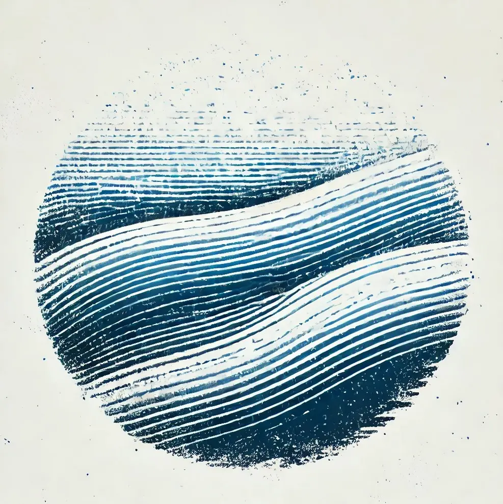
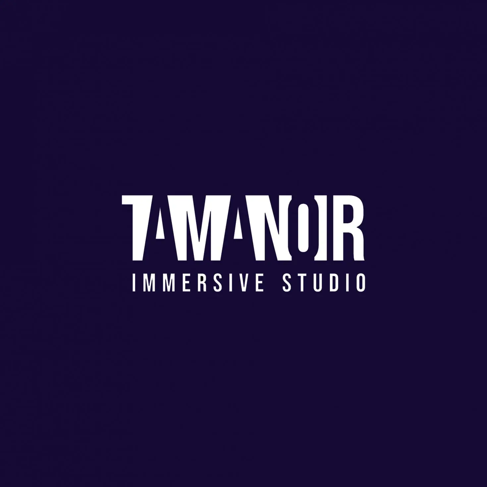
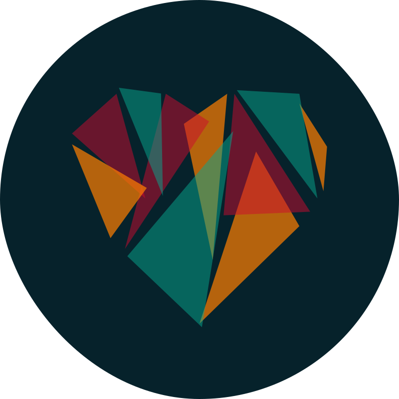

Autres projets
S'en Fouir

- Date
- Février 2024
- Projet
- Poème Immersif
- Rôle
- Sound design
“S'enfouir” est un poème de Sam Lecoeur, écrit et pensé pour être prolongé par le son.
- Écriture : Sam Lecoeur
- Voix : Claire Saumande
- Sound design : Jean Le Bellego
Démo Tamanoir

- Date
- Janvier 2024
- Projet
- Support de communication
- Rôle
- Sound design & composition musicale
Mini fiction participative mettant en valeur la portée narrative et immersive du son.
- Écriture : Louise Nguyen, Sam Lecoeur
- Sound design/Composition musicale : Jean Le Bellego
WebStories

- Date
- Mars 2021
- Projet
- Jingle
- Rôle
- Sound design & Composition musicale
Jingle pour la conférence WebStories qui a pour objectif de proposer une journée de talks tenus par des conférencier·e·s internationaux sur des sujets fondamentaux du web, comme les bonnes pratiques de développement, les standards web, la conception d'interface utilisateur, ou encore l'accessibilité web.
- Logo : Ge Ricci
- Jingle : Jean Le Bellego
Opéra 360°

- Date
- Novembre 2021
- Projet
- Vidéo 360°
- Rôle
- Composition musicale
Série de vidéo 360° qui suit les déambulations d’artistes dans les lieux mythiques de l'Opéra National de Paris.
- Réalisation : Rémi Large
- Son : Alix Clément
- Scripte : Clara Lamarque
- Composition Musicale : Jean Le Bellego
- Production exécutive : Tamanoir Immersive Studio
TechEthic

- Date
- Décembre 2020
- Projet
- Jingle
- Rôle
- Sound design & Composition musical
Jingle pour le podcast Tech Ethic qui parle de sujets éthiques comme l'accessibilité, l'écologie ou la #tech4Good dans le monde technologique.
- Logo : Ge Ricci
- Jingle : Jean Le Bellego